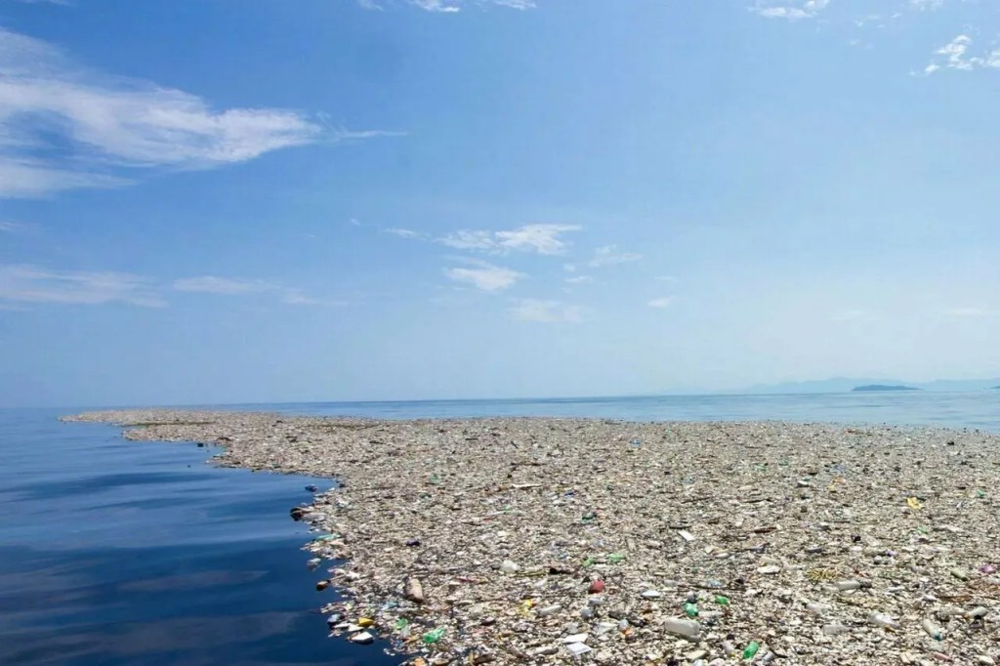
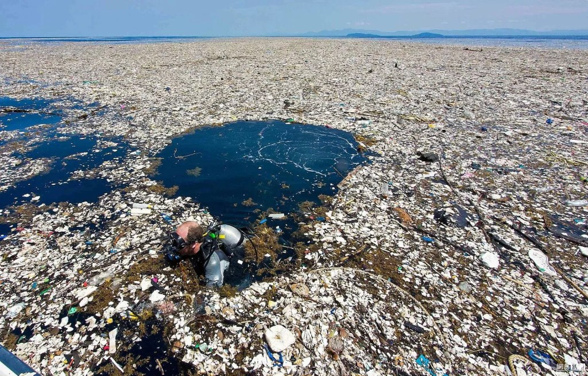
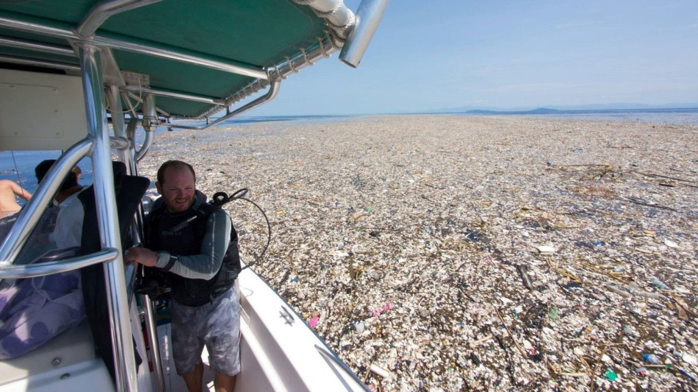
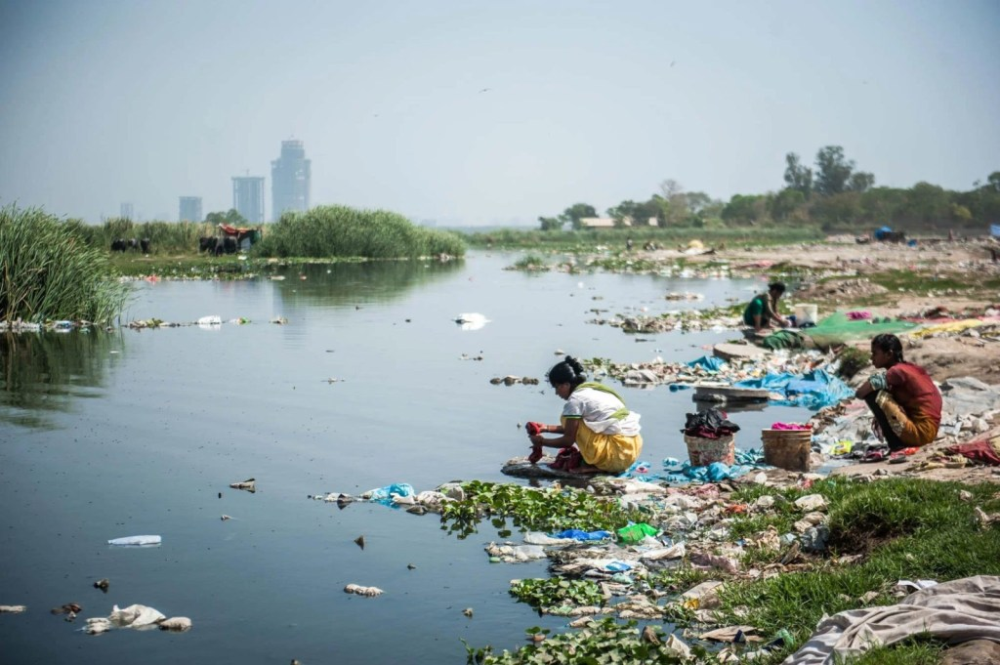
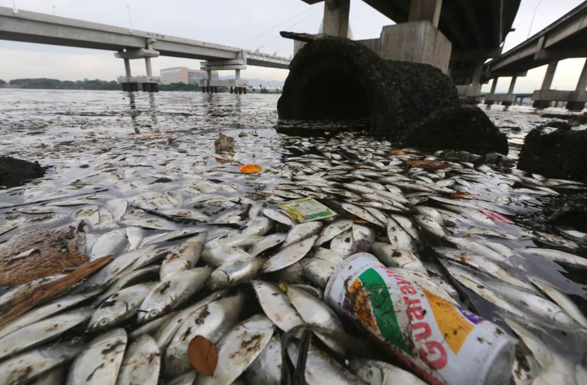

Остров мусора в Тихом океане
В течение недели всякий раз, когда я выходил на палубу, мимо плыл какой-то пластиковый хлам. Я не мог поверить своим глазам: как мы могли загадить такую огромную акваторию? По этой помойке мне пришлось плыть день за днем, и конца ей не было видно…
Чарльз Мур
Началась история не в столь далеком 1997 году. Именно тогда Чарльз Мур, который бороздил по Тихому океану в свое удовольствие, внезапно наткнулся на образование, издали похожее на сушу со странным видом: ни гор, ни деревьев, просто растянутое на необозримую площадь пятно. Морские карты ничего не подсказывали, он продолжал сближаться с непонятным ему открытием. Подойдя поближе, Чарльз с удивлением обнаружил, что перед ним на десятки миль раскинулась не суша, а скопление мусора.
Путешественник по возвращению начал публиковать статьи, чем и привлек внимание всей общественности к проблеме мусора в Тихом океане. Оказалось, что о его находке было известно еще с конца 80-х.
Само пятно мусора в Тихом океане найдено фактически не было, но ученые из Национальной ассоциации океанов и атмосферы наблюдали за движением течений и их влиянием на скопление отходов. В результате они пришли к неутешительному выводу, что разные отходы, в том числе и пластиковый мусор, в океане где-то скапливаются.
Что касается Чарльза Мура, то увиденное ошеломило его, и он основал организацию по исследованию мирового океана. В ходе дальнейшего изучения находки оказалось, что проблема загрязнения океана еще более серьезная, чем ученые предполагали.
Например, такое количество мусора – это прямая причина ежегодной гибели морских обитателей, включая птиц. Наибольшую угрозу представляет пластик, который может находится в воде и под водой сотни лет. Именно из-за него пятно продолжает расти, обещая увеличение мусорного континента в два раза всего в течение ближайшего десятилетия.
Причины появления мусора в океане
От мусора страдает не только Тихий, но и остальные океаны. Исключение – Северный Ледовитый. Бесконтрольное выбрасывание мусора непосредственно в океан приводит к попаданию в него отходов и в частности пластика. Но это лишь пятая часть из того, что приводит к загрязнению мирового океана мусором. Жители и предприятия береговой линии, туристы, персонал морского транспорта – вот те, кто непосредственно причастен к этому
Остальные 80% отходов – это результат той же деятельности людей, фабрик и заводов, но уже в глубине материков. Бесконтрольное выбрасывание мусора в реки и моря. О том, как мусор попадает в океан – известно со школьной скамьи. Его питают реки и моря. Но вместе с водой непрерывным потоком поступают и отходы жизнедеятельности человека.
Для справки! Несмотря на то, что россияне образуют до 70 млн т мусора в год, лидерами в этом являются Китай, Таиланд и Индия. Для жителей этих стран использование рек, морей и океана для «утилизации» мусора вполне нормальное явление. Кроме того, именно здесь находится половина населения планеты.
Для жителей этих стран использование рек, морей и океана для «утилизации» мусора вполне нормальное явление. Кроме того, именно здесь находится половина населения планеты.
Пластик – это не единственное, что можно встретить в таких пятнах по всему мировому океану. Отходы буровых нефтяных установок, обломки кораблей, рыболовные сети и многое другое, состоящее из долго разлагаемых материалов – все это несут течения в определенные места, формируя пятна мусорных островов.
Сколько мусора в океане точно не известно. Например, найденное Чарльзом Муром тихоокеанское пятно приблизительно занимает площадь, превышающую 10 млн км2, а расчетный вес его превышает 3,5 млн т. И это только одно скопление, а их насчитывается в мировом океане десятки.
Последствия загрязнения океана мусором
Чего-то хорошего от такого захоронения отходов в океанах и морях ожидать не приходится. Они образуют большие площади гниющей, мертвой воды, которая непосредственно убивает всю флору и фауну в пределах досягаемости.
Дело в том, что такой слой мусора препятствует попаданию солнечных лучей вглубь воды. Планктон, водоросли, другие организмы, нуждающиеся в свете, гибнут. Исчезает источник пищи для других обитателей, которые также исчезают. Тенденция продолжается, часть мирового океана становится безжизненной.
На мусор воздействуют ультрафиолетовое излучение, стимулируются химические процессы. Выделяются токсины, ядовитые вещества, которые попадают не только в воду, но и воздух, а также в организмы рыб, птиц и животных. Часть из них умирает, другая дает мутированное потомство. Экосистема быстро меняется в худшую сторону.
Некоторые факты, которые отмечаются исследователями на сегодняшний день:
- Уже 2 из 5 альбатросов погибают из-за попадания пластика в их организм;
- У 8-10% рыб в желудках находится пластик;
- Увеличение мусора в океане проходит настолько быстрыми темпами, что через четверть века пластик будет находиться в каждом морском обитателе, будь то птица или рыба.
Все эти процессы затрагивают и промышленные виды рыб. Попадая на стол человека, они неумолимо становятся источником отравляющих или вредных веществ. Угроза усиливается тем, что эти вещества действуют не сразу, а накапливаются в организме, провоцируют возникновение и развитие опасных и тяжелых, а нередко и трудноизлечимых заболеваний.
Экологи и ученные с тревогой смотрят в ближайшее будущее. Именно их опасения и расчеты привели к тому, что цивилизованный мир обратил пристальное внимание на обращение отходов. Разделение мусора, его эффективное хранение, переработка и утилизация – вот ключ к чистому мировому океану и экологической безопасности все живого на планете Земля.